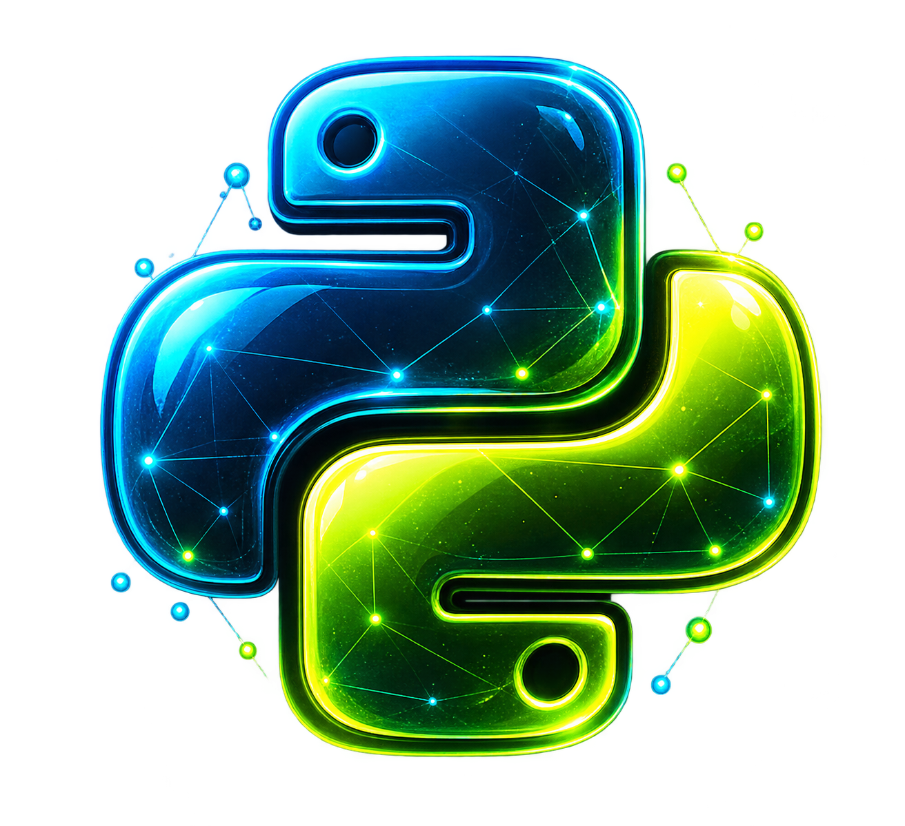
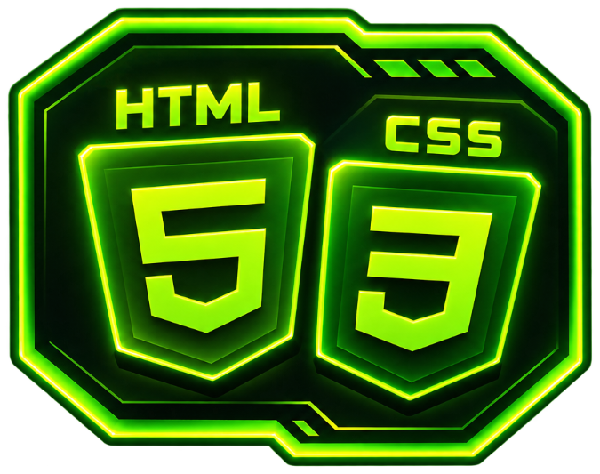

01
THE STARTING POINT
Python
It starts with writing clear, practical code. Python is the foundation for exploring data, building applications, and bringing machine-learning ideas to life.
My work brings together Python development, practical machine learning, AI mentoring, and web design. Alongside my development work, I have one year of experience across AI mentoring and web design. I enjoy turning ideas into useful projects and helping others understand the technology behind them.
EXPLORE MY PROJECTSEvery stop adds a new tool to the journey: learn a concept, put it into practice, then build on it.

01It starts with writing clear, practical code. Python is the foundation for exploring data, building applications, and bringing machine-learning ideas to life.
Before a model can learn, the data needs to be understood. I use Python data tools to organize, explore, and prepare information for experiments.
Turning prepared data into predictive models, comparing approaches, and evaluating how well they work. This is where my Python development journey meets practical AI.
Going deeper with neural networks: building and experimenting with models that can learn complex patterns from data.
Applying deep-learning techniques to images, from handwritten digits and everyday objects to fine-tuning pre-trained models.
Each project is a chance to connect the steps: explore a dataset, choose an approach, build a solution, and share what it can do.
SEE ALL PROJECTSAlongside my technical journey, I have one year of experience across AI mentoring and web design.
Making AI and machine-learning ideas easier to approach, encouraging hands-on learning, and helping learners grow through building.

SHAPING THE EXPERIENCECombining visual thinking with responsive web design to turn ideas into clear, engaging digital experiences.
Open to interesting Python, machine-learning, AI, and web opportunities.